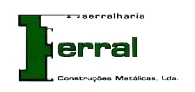

Alumínio e PVC
Janelas, portas, portadas, portões e soluções para varandas e coberturas.
Falar sobre alumínio e pvc
Serralharia FerralSerralharia Ferral / Soluções
Alumínio, PVC, ferro e aço inox. Soluções de serralharia para integrar no seu projeto, com fabrico mediante as necessidades de cada obra.
Janelas, portas, portadas, portões e soluções para varandas e coberturas.
Falar sobre alumínio e pvcEscadas, estruturas metálicas, portões, revestimentos e vedações mediante projeto.
Falar sobre ferroGuardas, escadas, portões e mobiliário para hotelaria, com soluções personalizadas.
Falar sobre aço inoxServiços para dar forma às peças do seu projeto. Partilhe o desenho e as necessidades com a equipa.
Falar sobre corte e quinagemOs exemplos apresentam trabalho publicado pela marca. Opções, medidas, disponibilidade e condições são confirmadas diretamente pela equipa.